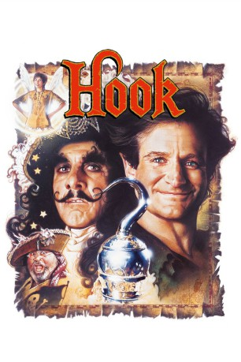

#2971 Hook
Auszeichnungen: für 5 Oscars nominiert
 
 IMDB-Wertung: 6.7 / 10
IMDB-Wertung: 6.7 / 10  Metascore: 52
Metascore: 52 
Peter Pan hat Nimmerland den Rücken gekehrt. Schon vor Jahren ist der Junge, der niemals erwachsen werden wollte, in die „normale“ Welt zurückgekehrt. Peter Banning ist mittlerweile ein seriöser und leicht reizbarer Anwalt. An seine Kindheit als verwegener Held kann er sich kein bisschen mehr erinnern. Sein alter Erzfeind Captain Hook jedoch hat nichts vergessen. Noch immer sinnt er auf Rache, seit er im Kampf gegen Peter eine Hand an ein gefräßiges Krokodil verloren hat. Hook entführt die beiden Kinder von Peter in die verborgene Welt. Fee Glöckchen gelingt es, Peter zurück nach Nimmerland zu führen. Zunächst ist er völlig überfordert mit der Situation. Doch mit Hilfe der „verlorenen Jungs“ gewinnt er schließlich seine kindliche Fantasie zurück. Gemeinsam stellen sie sich dem entscheidenden Kampf gegen den schurkischen Piratenkapitän.
Jahr: 1991
Dauer: 141 Minuten
FSK: 6
Land: USA Studio: TriStar PicturesTonspuren: DD5.1 - ,
Untertitel: Deutsch,
Auflösung: 1080p (1920x800) Größe: 8232 MB
Genre: Komödie, Abenteuer, Fantasy, Familie
Regisseur:  Steven Spielberg
Steven Spielberg
Drehbuch: J.M. Barrie, J.M. Barrie, James V. Hart, Nick Castle, James V. Hart
Soundtrack: John Williams
Darsteller:
 Dustin Hoffman als Captain Hook
Dustin Hoffman als Captain Hook Robin Williams als Peter Banning
Robin Williams als Peter Banning Julia Roberts als Tinkerbell
Julia Roberts als Tinkerbell Bob Hoskins als Smee
Bob Hoskins als Smee Maggie Smith als Granny Wendy
Maggie Smith als Granny Wendy Caroline Goodall als Moira Banning
Caroline Goodall als Moira Banning- Charlie Korsmo als Jack 'Jackie' Banning
- Amber Scott als Maggie Banning
- Phil Collins als Inspector Good
 Arthur Malet als Tootles
Arthur Malet als Tootles- Jasen Fisher als Ace
 Dante Basco als Rufio
Dante Basco als Rufio James Madio als Don't Ask
James Madio als Don't Ask- Ryan Francis als Young Peter Pan
- Max Hoffman als 5-Year-Old Peter Pan
- Kelly Rowan als Peter's Mother
- Regina Russell als Mermaid
- Rebecca Hoffman als Jane in Play
 Jake Hoffman als Little League Player
Jake Hoffman als Little League Player- Geoffrey Lower als Brad
 Don S. Davis als Dr. Fields
Don S. Davis als Dr. Fields- Brad Blumenthal als Jim
- Brenda Isaacs Booth als Secretary
 Gwyneth Paltrow als Young Wendy
Gwyneth Paltrow als Young Wendy- Don McLeod als Shadow
 Beverly Polcyn als Prostitute
Beverly Polcyn als Prostitute- Randi Pareira als Prostitute
- David Crosby als Tickles
 Nick Tate als Noodler
Nick Tate als Noodler- Tony Burton als Bill Jukes
 Glenn Close als Gutless
Glenn Close als Gutless Kim Robillard als Toothless Cripple
Kim Robillard als Toothless Cripple Robert Amico als Pirate , uncredited
Robert Amico als Pirate , uncredited- Jeff Bornstein als Pirate , uncredited
 Jimmy Buffett als Shoe-Stealing Pirate , uncredited
Jimmy Buffett als Shoe-Stealing Pirate , uncredited- G. Larry Butler als Baseball Game Attendee , uncredited
- Brian DiMuccio als Pirate , uncredited
 Carrie Fisher als Woman Kissing on Bridge , uncredited
Carrie Fisher als Woman Kissing on Bridge , uncredited- Russell Gannon als Blacksmith , uncredited
 George Lucas als Man Kissing on Bridge , uncredited
George Lucas als Man Kissing on Bridge , uncredited- Bruce Mercury als The Drunk Pirate , uncredited
- Lisa Wilhoit als Baby Tinkerbell , uncredited
 Mark Winn als Praising Pirate , uncredited
Mark Winn als Praising Pirate , uncredited- Laurel Cronin als Liza, Wendy's Housekeeper
- Isaiah Robinson als Pockets
- Raushan Hammond als Thud Butt
- Thomas Tulak als Too Small
- Alex Zuckerman als Latchboy
- Ahmad Stoner als No Nap
- Bogdan Georghe als Lost Boy
Datei: X:\1991\Hook (1991, FSK6, 1920x800).mkv seit 11.01.2016
Festplatte: HD 1987-1991
 Es gibt insgesamt 53 Filme in der Gruppe '1991'
Es gibt insgesamt 53 Filme in der Gruppe '1991'